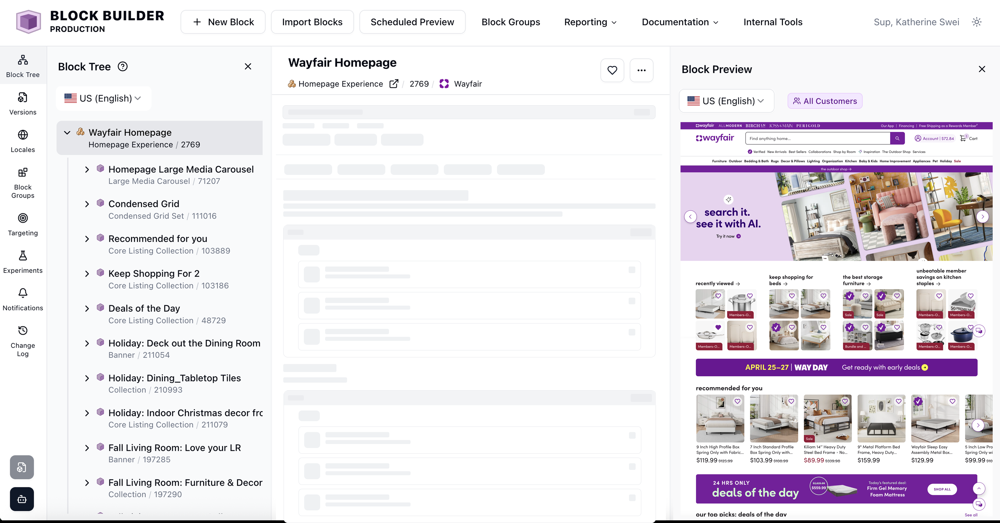
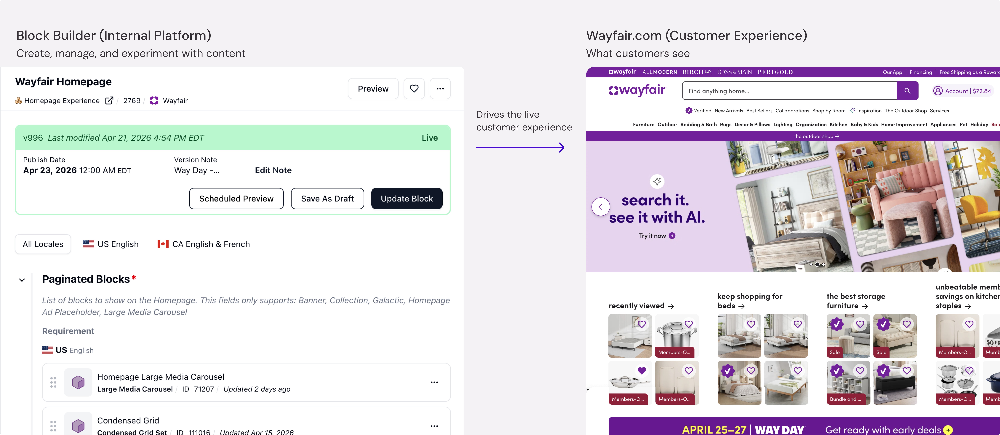

Wayfair Core Platform Redesign
Redefined the platform's information architecture and core workflows by introducing a new 3-panel design.
Impact
Content teams
Now have an editing experience they can navigate without working around it.
Major flow changes after user testing
Core problem solved right the first time — testing validated direction, not redirected it.
AI agent unblocked
The new IA gives Blocky a stable foundation to build on.
OverviewWhat is Block Builder
Block Builder is Wayfair's internal CMS — similar to Squarespace or Webflow but far more complex. It's how 50+ cross-functional teams build, configure, and publish everything customers see on Wayfair.com.

ProblemHard to use on the surface. Broken underneath.
Block Builder had been growing for years without a shared information architecture. As it scaled to support more teams and workflows, cracks started showing at every level. The team knew something was broken — the PM heard complaints constantly, and a survey confirmed it. But knowing a problem exists and knowing how to fix it are very different things.
Hard to Find Key Actions
9 features in one place buried important actions, forcing users to scroll and search — slowing down key workflows.
Hard to Stay Oriented
Nested drawers and multiple layers made it difficult for users to stay oriented and move efficiently. Every action felt like starting over.
Poor Structure & Limited Scalability
No shared IA meant every new feature got bolted on wherever it fit. The platform couldn't grow without getting harder to use.
How I drove directionFinding the pathbefore designing the solution
My first move wasn't to design. It was to get the team to feel the problem themselves. I ran a dogfooding workshop where we used Block Builder the way our users do. That gave us shared language — not just a list of complaints, but a real understanding of where the experience broke down.
From there I went deep on competitor research: Contentful, Sanity, Figma. The pattern was consistent. Fixed left rail for navigation. 3-panel layout for editing. It's the standard for this type of platform because it works. I explored other directions too — a dedicated dashboard page per block felt promising until it didn't. Too many surfaces, too much context switching. The 3-panel layout was structurally cleaner, easier to learn, and easier to extend.
Competitive research
Identified patterns and interactions across complex platforms
Prototyping & ideation
Validated ideas and aligned stakeholders early
Strategic planning
Defined MVP, Post-MVP, and long-term vision
The designSolution — 3 Panel Navigation
I introduced a three-panel layout: a fixed left rail for feature navigation, a central editing workspace, and a right preview panel. The layout stays stable while content changes — so users always know where they are.
Improved Feature Discoverability
Reorganized features into a structured sidebar grouped by function. Key actions surfaced higher in the hierarchy — no more scrolling to find basic tools.
Easier Navigation Within the Page
Replaced nested drawers with menu-based navigation. Users can navigate and edit in one place — reducing context switching and keeping them oriented.
Designed for Scalability
Introduced a clearer structure to support future features — the platform can grow without getting harder to use.
Flexible panel architecture3 Panels + AI Agent
The design supports multiple panel configurations — not just a fixed 3-panel layout. We also introduced Blocky, an AI agent, as an optional panel. Since we envision AI-assisted workflows as core to the platform's future, it's always accessible.
Default
Main editing workspace is always visible.
Feature + Main
Focus on building and iterating features while editing content.
Main + Preview
Edit and preview side by side for quick QA.
Feature + Main + Preview
Full workflow — navigate features, edit content, and preview in one view.
AI agent + Main
Use AI agent while focusing on editing the main content.
AI agent + Main + Preview
Generate content with AI while previewing the live experience.
Deep diveMenu Navigation
I reimagined the existing feature as a menu-based navigation — reusing what was already there to save engineering time and remove the need for multiple drawers. Through iteration I refined how information is displayed.
- Old: only block titles shown — hard to distinguish between similar blocks
- Final: block title as primary label, block type and ID as secondary — hierarchy is clear at a glance
Old
V1
Final
Stakeholder alignmentGetting engineering to pull it in
PM and EM were on board early. Engineering was a different story. When I first presented in summer, the project didn't make the winter roadmap — the scope felt too large and the timing wasn't right.
What actually changed things wasn't persistence — it was reframing. The redesign wasn't just a usability fix. It was the infrastructure the AI agent needed to exist. Once engineering understood that, they pulled it into the roadmap themselves at the end of the winter cycle. To make it feasible, I scoped it into a clear MVP and post-MVP — giving engineering a path they could commit to without betting everything on one big launch.
"There aren't enough emojis in the world to show how excited I am 🌟 SO COOL!"
— User reaction on launch day
ReflectionBuilding in the unknown
This project had a lot of ambiguity. I identified the problem and led it end-to-end without a clear roadmap — which meant I had to build conviction before I had permission.
What I'd do differently: trust the idea sooner. I had a previous direction fail and let that make me hesitant longer than I should have been. The research was pointing at 3-panel the whole time. Next time I'll move faster from insight to conviction.